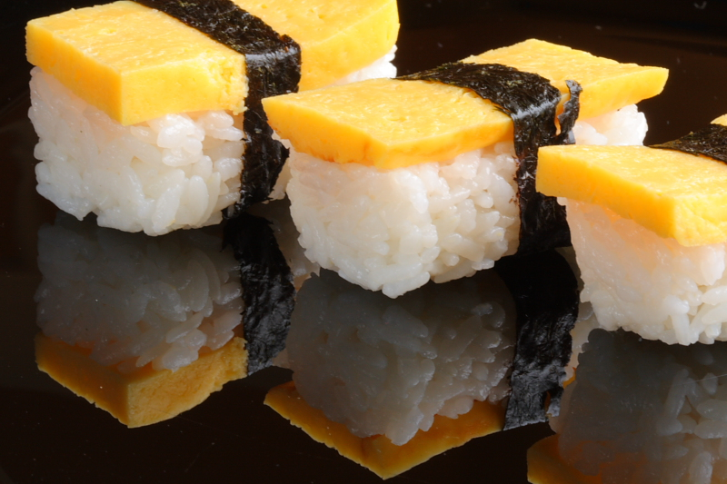

Home
Tamago

This top-rated tamago recipe seems intimidating, but it’s surprisingly easy to make at home!
These are the ingredients you’ll need to make this tamago recipe.
Ingredients
- Eggs: Four eggs will make about six servings
- Dashi stock: You can use store-bought dashi stock or make your own at home
- Sugar: Sweeten things up with a tablespoon of white sugar
- Mirin: Mirin (Japanese sweet wine) adds a blend of sweetness and umami
- Soy sauce: Salty soy sauce lends savory flavor
- Oil: Use vegetable oil to cook the tamago in a skillet
Steps
Here’s a brief overview of what you can expect when you make tamago at home:
- Beat the eggs, then whisk in the remaining ingredients (except the oil)
- Follow the detailed instructions in Step 3 to cook and form the rolled omelet.
- Cut into six equal pieces to serve.